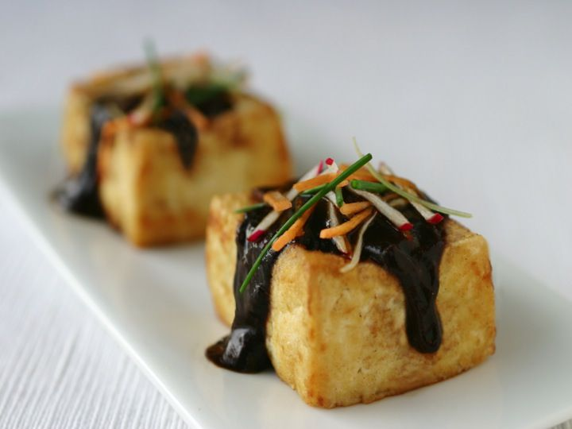

Tofu Agedashi

Description
It all started when I was seven.
No, just kidding. Tofu agedashi is a super simple meal that happens to be very cheap. A single block of tofu and some flour is all that's needed for the base. Then drizzle some miso sauce on it and garnish.
Ingredients
- 2 Blocks of tofu
- Sunflower oil
- 4 Tbsp flour
- 2 tsp grated ginger, and red radish slices for garnish
- 1 Spring onion, finely sliced diagnolly to garnish
- 2 Tbsp barley miso, mixed with water to a sauce-like consistency
Steps
- Press and drain the tofu.
- Put oil in a pan and heat to 350f.
- Cut each tofu block into fourths.
- Dust with flower then add to the oil, turning until all sides are crisp and golden
- Arrange in bowls, pour miso sauce over the tofu and garnish with ginger, red radish, and spring onion.
Homepage